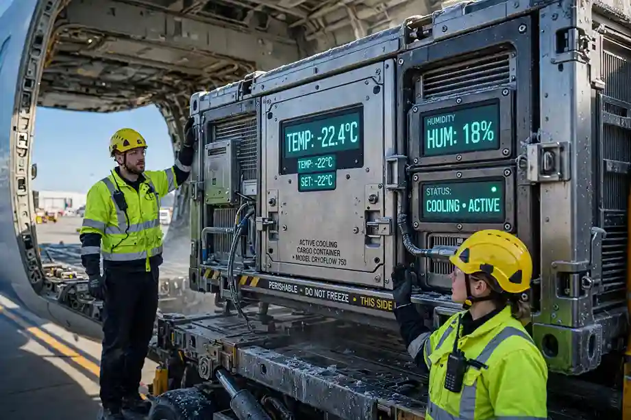

TL;DR: Cold chain pharma logistics depends on holding temperature-sensitive cargo within strict bands such as +2 to +8 degrees Celsius for most vaccines, or -60 to -90 degrees for mRNA biologics. Commercial hub-and-spoke freight exposes shipments to hours of tarmac heat per transit, risking irreversible product loss. Dedicated cargo charter flights solve this by using wide-body freighters with main-deck power and active containers such as the Envirotainer RAP e2, flying point-to-point from origin to destination. Charter is the standard for vaccine rollouts, clinical trial supplies and GDP-critical biologics. Costs typically run $35,000 to $60,000 per block hour for a wide-body freighter, with a single unbroken chain of custody that simplifies regulatory audit.
Global pharmaceutical logistics is undergoing a biological revolution. mRNA vaccines, monoclonal antibodies and advanced biologics now move through supply chains that cannot tolerate the simplest temperature deviation. A few degrees of excursion can irreversibly degrade a multi-million dollar shipment. Dedicated air cargo charter provides the most controlled environment for these products: it flies point-to-point, bypasses commercial hub exposure and keeps active containers powered from departure to arrival. Our cold chain pharma charter service operates on exactly this model.
Temperature excursion is the central risk in pharma logistics. If a pallet of vaccines sits on a hot tarmac in Dubai or Singapore for 45 minutes, its internal temperature can breach the +8 degree ceiling. Proteins denature, and the product cannot be reconstituted. The shipment is destroyed, the loss is total, and the patient delay is worse than the financial loss. Industry estimates place cold chain excursion losses at $15 to $35 billion annually worldwide.
Four bands cover almost every pharmaceutical shipment. Each band maps to different container technology and different aircraft capability.
| Band | Range | Typical products | Container |
|---|---|---|---|
| CRT | +15 to +25 °C | Tablets, capsules, packaged OTC | Passive |
| Chilled | +2 to +8 °C | Most vaccines, insulin, biologics | Active or passive |
| Frozen | -15 to -25 °C | Plasma, certain biologics | Active |
| Deep Frozen | -60 to -90 °C | mRNA vaccines (Pfizer/BioNTech) | Active, dry ice |
Passive systems such as the Csafe RKN rely on phase-change materials or dry ice enclosed in thermal insulation. They have no external power source and hold temperature for a finite window, typically 48 to 120 hours. They are cost-effective for short regional hops, but once the dry ice sublimates or the PCM warms, the protective envelope collapses. They are also heavy, eating into payload.
Active systems such as the Envirotainer RAP e2 are self-contained refrigerators with battery-powered compressors, real-time dataloggers and the ability to plug into the aircraft's main deck power supply (110V or 220V). They hold +2 to +8 degrees for days regardless of ambient heat. For any long-haul or high-value shipment, active containers are the standard.
Commercial passenger and cargo airlines route freight through hub-and-spoke networks. A pharma shipment flying Mumbai to London might transit Dubai or Frankfurt. At each hub, cargo is offloaded, moved by tug to a warehouse, sorted and reloaded. That tarmac exposure adds up across a multi-leg journey, and a single customs delay can drain an active container's battery below safe levels.
Commercial networks also prioritize volume, not a single pharma pallet. A shipment cannot be advanced without surcharges, and multi-leg routing reduces the number of working hours the active container has left. When urgency is the driver, commercial freight rarely delivers.
Charter is the standard solution when volume, value or urgency exceeds what commercial networks can safely handle. That means vaccine rollouts, clinical trial supplies, temperature-critical biologics and any shipment where commercial transit time exceeds the active container's safe hold window.
Wide-body freighters dominate long-haul pharma because they combine main deck power, temperature-stable cargo holds and 60 to 110 tonnes of payload. The Airbus A330-200F is common on medium-haul pharma lanes; the Boeing 777F and 747-200F cover the longest missions. Narrow-body options such as the 737-800BCF handle regional pharma when the container's hold window allows.
Aircraft selection also matters for pharma: the freighter must have functioning main-deck power, a documented temperature profile and ground handling arrangements that keep active containers powered during loading and unloading.
Cross-border pharma charters require overflight and landing permits, and often a narcotics or controlled-substance import licence for medicines. GDP documentation must accompany the shipment: temperature logger data, container calibration records and a signed chain-of-custody at each handoff. For urgent rollouts, the practical sequence is:
Sourcing the right combination of freighter, active container and ground handling is a specialist task. Not every AOC holder has main-deck power. Not every handling agent has a validated passive or active container cooling facility. Getting these wrong is expensive; getting them right under time pressure is what a broker is for.
Skylinks Asia sources licensed operators, coordinates container leasing, manages permits across borders and oversees GDP-compliant handling at origin and destination. We are a charter broker, not a carrier. Our value is the intelligence layer between your cargo and the aircraft. For a broader view of the cargo charter category, see our urgent cargo charter services and our recent cold chain winter playbook.
Our 24/7 operations team is ready to source the nearest GDP-compliant freighter for your critical cargo. Talk to our pharma charter desk for a tailored quote.
Contact Our Charter Desk